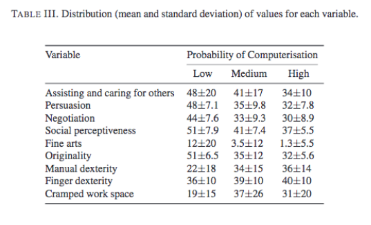
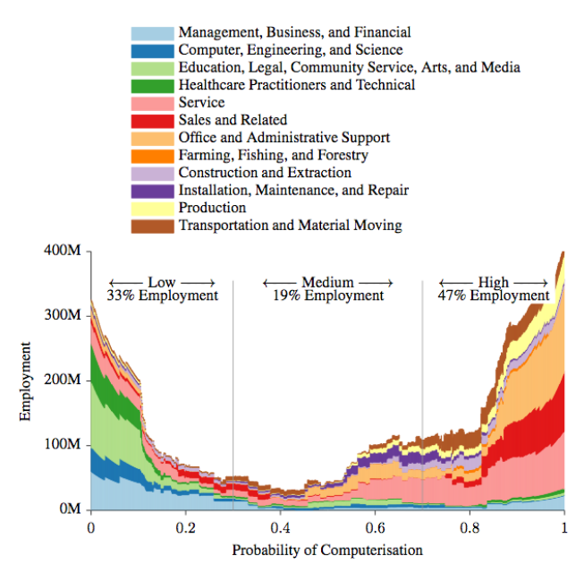
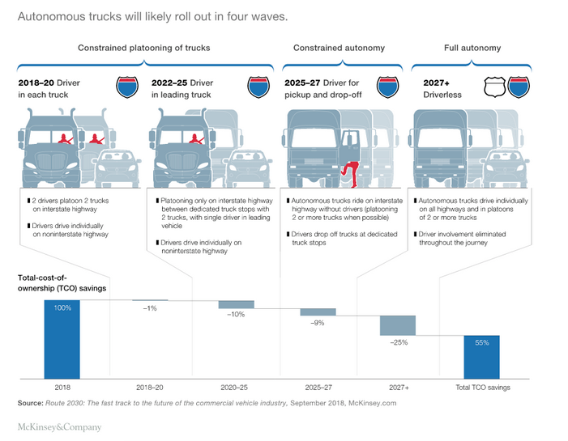

Ro/Bots: UBI, LAWS, and Moral Machines
This week: First, we finish up discussions of natural versus artificial languages. Then we move on to robots. While the original Industrial Revolution automated simple manual labor, we are in what is called The Fourth Industrial Revolution. This uses Data+AI+Robotics to increasingly take over both largely physical tasks (e.g. driving on highways and automated killing on the battlefield) as well as largely cognitive tasks (e.g. code generation and emotional care giving). How will we respond to this automation of what has long been considered the exclusive domain of humans?
We'll first explore why some argue this new wave of automation differs from earlier waves. Our ethical debate will center on whether Universal Basic Income (UBI) is a viable solution to the potential eradication of entire employment sectors. How should we prepare for the coming automation of so many different kinds of jobs, from truck drivers to paralegals, and from programmers to journalists? We'll also consider what happens when our autonomous systems make ethical decisions about whom to kill without the oversight of a human decision maker. Can (or even should) we ensure that self-driving cars make ethical decisions in the case of an unavoidable accident? Should we use Lethal Autonomous Weapons (LAWs) for warfare to minimize civilian collateral damage? In what ways could LAWs lead to more violence and conflict?
Finally, we consider how robots may replace humans in even more intimate ways. Should we allow robots to provide emotional or sexual comfort for the lonely, the aged, or those left behind? Last week, with OOO, we saw a philosophical position that provides a counter to traditional humanism by de-centering a humanist value stance. This week we consider ways that we are creating our own posthumanist world by merging with our machines through robotics or human-machine interfaces.
Monday: Discussion of human versus artificial languages and OOO
- The first two readings (Pinker and SlateStarCodex) are simply to give you contrasting views of language as either complex psycho-social phenomena or large-scale statistical correlations. This is a debate similar to that over language acquisition between B.F. Skinner's Behavioral Theory and Chomsky's Universal Grammar.
- Linguistics as a Window to Understand the Brain (CONTINUE 13:30-32:00 through CRITIQUES OF CHOMSKY) Steven Pinker, Think Big, Oct 2012
- GPT-2 as a Step Towards General Intelligence, Slate Star Codex, Feb 2019 (GPT-2 is an earlier and much smaller/less powerful model ChatGPT)
- What is Object-Oriented Ontology? A Quick and Dirty Guide to the Philosophical Movement Sweeping the Art World, Dylan Kerr, Apr 2016
- The Rise of the Machines - Why Automation is Different This Time (11:40) Kurzgesagt, Jun 2017
- Universal Basic Income Explained, (9:00) Kurzgesagt
- DataCamp, Introduction to Python
- Chapter 4, Numpy
- Test Your Understanding
- Theories of language are important for understanding how computers can both "understand" and generate language. What are the critiques of Chomsky? What do you think of GPT-2 (3, 4, o1) and its output? Does it tell us anything about how language works?
- Can you explain OOO? How does this philosophical position reflect the "thought" of objected-oriented programming? Is it ethically compelling or not, and why?
- Some argue that automation is nothing new. Why do others argue this time is different?
- Which cognitive jobs are threatened by automation? Which are more robot-proof?
- A typical societal response to automation is to suggest education and retraining as an answer to automation. How/what limitations might there be to this approach, especially if this time really is different?
- What is UBI? What other solutions to the coming automation might you propose?
Wednesday: Moral Machines?
- Neuralink: Merging Man and Machine (12:51) Aperture, Jan 2020
- Asimov's rules for robots
- Elon Musk: Tesla Autopilot, (32:44) Lex Fridman, AI Podcast, Apr 2019
- Pentagon's Mini-Drones Swarm Like Bees (1:14) Business Insider, Jan 2017
- Risks of Lethal AWS AutonomousWeapons.org
- Robotic Pets Are Helping Dementia Patients (4:11) Vice News | HBO, Oct 2017
- Top 10 new Humanoid Robots (16:43) The AIGrid, 2024
- Datacamp, Intermediate Python
- Chapter 1, Matplotlib (a bit of review)
- Alternate for more experienced coders: Introduction to Shell (submit screenshot to Prof. Elkins via email)
- Test Your Understanding
- We continue our investigation of transhumanism with a closer look at neuralink, a brain-human interface. Should we all be allowed to augment our brains in these ways?
- How can we update the traditional 3 Laws of Robots to account for self-driving cars and lethal autonomous weapons? What are the arguments for and against LAWS?
- Should we allow robots to provide comfort to humans? How do we prevent exploitation of the vulnerable?
- What are the various use cases of robots? How close are we to having robots in houses?
Friday: (October Break)
Optional (for those who are interested) Peter Singer on Robot Rights
and a Kurzgesagt. Also Thursday Tesla releases info about its robotaxi and robotics, etc.
**Check Moodle and make sure it is up to date with all datacamps and assignments. We will not be using Claude for the next few weeks--some students found hallucinations in data viz and it seems less than reliable. Feel free to cancel if you started a subscription; I will let you know when/if we need an AI subscription.**
Start in on next week's homework
In Class Demo:
- Boston Dynamics Atlas Parkour, Aug 2021
- Here's Comes the US Army's New Super Robo-Dog With Sniper Rifle, Nov 2021
- MIT Moral Machine Quiz
More Discussion Questions:
- AI and robotics researchers often try to anthropomorphize technology via Animatronic/Video faces, Voice Interfaces (VUI) or biped robots with human faces and gestures. Often this makes interaction more intuitive and effective and sometimes they tumble into the Uncanny Valley. Are there scenarios where we should design AI or robots to be clearly non-human? In which scenarios and why?
- What do you feel about AI/robots developing emotional intelligence? Humans constantly lie, persuade or otherwise try to influence others for their own benefit; would it be wrong if AI/robots do the same? Can you think of any rules or regulations (e.g. transparency or liability laws) that could make the use of affective computing tolerable or even preferable to the human variety?
- Humans have developed a number of laws to protect the most vulnerable of our society (e.g. child services, laws against elder abuse and predatory lending practices). How do we calibrate just how aggressive, intelligent and effective our AI/robotic technologies can be to ensure these legal protections?
- Former US Justice Dept Lawyer and UC Berkeley Boalt Law School Professor John Yoo famously made the argument that we may not want to rule out using assassin drone technology in a first strike scenario. After all, surgically killing one person or a group of leaders is objectively more humane than the massive loss of life, property and material that comes with conventional warfare. What do you think of this reasoning? Can you think of qualifications that could improve this position? Given the growing appeal of automated warfare, can you think of a way to retard the logical slide toward an automated tech warfare that is detached from any public awareness or understanding?
- Should we allow users of self-driving cars to program their own choice of casualties in the unfortunate instance in which someone might die? Should this be determined by country to account for cultural difference?


